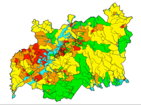

|  |
Final EngD ModelBy Kurtis Garbutt |
The model reads a number of GIS shapefiles and displays a road network, two Environment Agency flood maps and a bespoke Open Source Vulnerability Index (OSVI). The model reads in a .CSV and generates a predetermined number of agents with set characteristics. The agents are placed on the road network and are located at a Red Cross office. The model reads a separate .CSV and assigns goal locations to each agent at random from a predetermined list. The agents are assigned speeds at random. Once the model is started, the agents move from A to B, then they change direction and head back to their start position. The process repeats until the user quits.